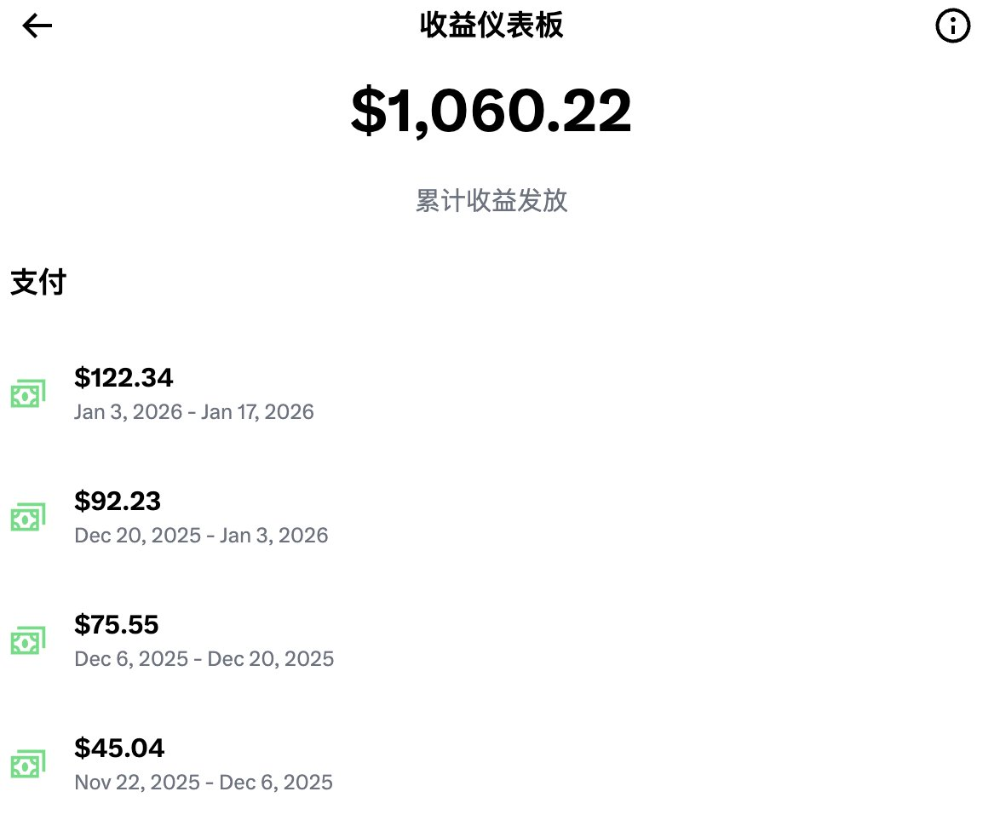
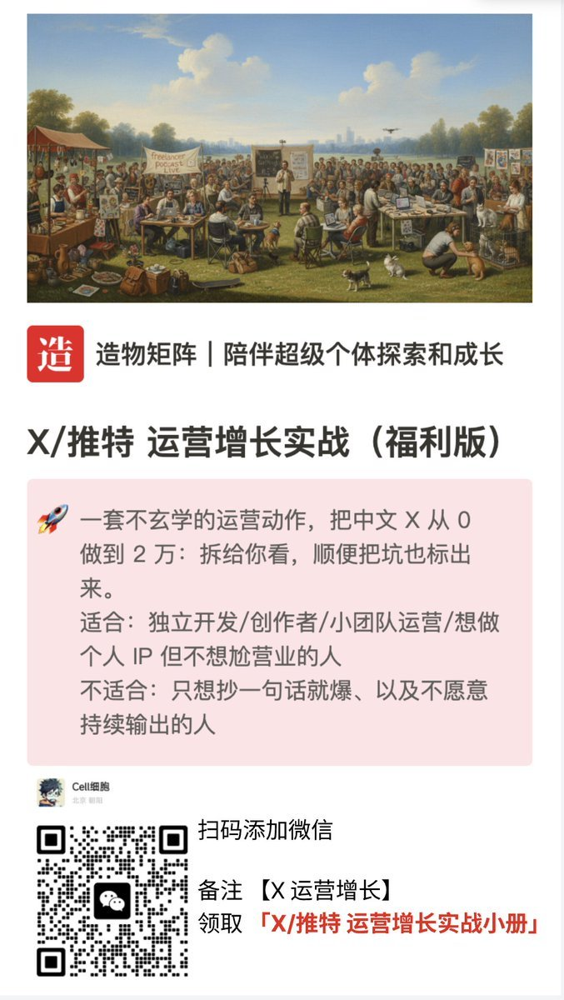

山田リョウ⛩️
@Yamada_Ryoooo
@cellinlab 可以点点互关嘛
我才2%的premium follower，我也想领老马的低保🥺


Cell 细胞
@cellinlab
过千 $ 了，感谢 X ！
之前，把《X/推特 运营增长方法论》新人启动模块
单独抽出来了，给大家送福利！🎉
模块A：准备基础（Bio公式/三件套检查清单/定位句模板）
模块B：冷启动（30分钟互动SOP/关系分层表/避坑指南）
模块C：内容生产（选题系统/发布节奏/避免翻车）
这是我从 0 做到 2 万 fo https://t.co/sTbqOSUxuK https://t.co/c74QFmZFcR